Bienvenue dans la section Rechercher
Explorez l'immensité du web avec confiance ! Cette section est votre boîte à outils complète pour une navigation internet plus efficace et enrichissante. Que vous soyez un explorateur chevronné ou que vous commenciez tout juste votre voyage dans l'univers numérique, vous trouverez ici les meilleurs outils pour affiner vos recherches. Découvrez des moteurs de recherche adaptés à vos besoins spécifiques, des navigateurs innovants, et des astuces pour dénicher l'information que vous cherchez. Notre sélection d'outils vous permettra d'aller au-delà des résultats conventionnels et d'accéder à des contenus plus pertinents. Prenez le contrôle de votre expérience en ligne et transformez chaque recherche en une découverte enrichissante. Votre quête d'information commence ici !
Alors, que cherchez-vous ?

Les meilleurs outils de recherche en
 Aaino
Aaino
Aaino est votre compagnon de voyage dans l'univers du web, conçu pour transformer chaque recherche en découverte. Cette plateforme unique combine intelligence de recherche et curation humaine pour vous guider vers les trésors cachés d'Internet. Que vous soyez passionné de streaming, amateur de logiciels innovants ou simplement curieux d'explorer le web différemment, Aaino vous accompagne avec une sélection minutieuse de ressources, constamment mise à jour pour refléter les meilleures découvertes du moment.
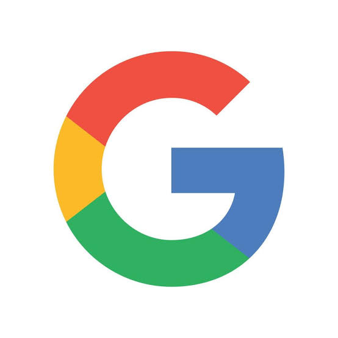Google
Google est un moteur de recherche puissant et rapide qui permet aux utilisateurs de trouver des informations, des images, des vidéos et des actualités sur internet. Il est simple à utiliser, offre des résultats pertinents et propose des services supplémentaires comme la traduction, la cartographie, le stockage de données et les recommandations personnalisées. Ses avantages incluent une interface intuitive, la fiabilité des résultats et des fonctionnalités variées pour faciliter la navigation en ligne.
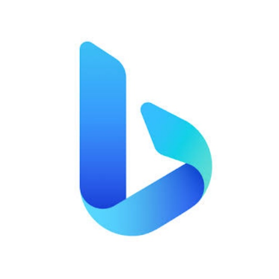Bing
Bing est un moteur de recherche de Microsoft qui fournit des résultats pertinents, des images, des vidéos et des cartes. Il inclut des fonctionnalités comme la recherche vocale et la traduction, tout en étant bien intégré aux produits Microsoft pour une expérience fluide. Son interface est visuellement attrayante et offre des récompenses pour son utilisation.
DuckDuckGo
DuckDuckGo est un moteur de recherche axé sur la confidentialité, ne suivant pas les utilisateurs ni ne collectant leurs données personnelles. Il offre des résultats de recherche pertinents, des fonctionnalités de protection de la vie privée et une interface simple. Il est idéal pour ceux qui privilégient la confidentialité en ligne tout en obtenant des résultats fiables.
Swisscows
Swisscows est un moteur de recherche suisse axé sur la confidentialité, ne collectant ni ne stockant de données personnelles. Il offre des résultats pertinents et sûrs, avec un accent sur la protection de la vie privée et une interface simple. Il inclut également des résultats enrichis et des options pour rechercher des images et des vidéos.
Yahoo
Yahoo est un portail web qui combine un moteur de recherche, des actualités, des emails, des services financiers et des informations sur le sport. Il offre une interface conviviale avec un accès rapide à divers contenus et services en ligne, tout en proposant une expérience personnalisée selon les intérêts des utilisateurs.
Ecosia
Ecosia est un moteur de recherche éco-responsable qui utilise les revenus générés par les recherches pour financer des projets de reforestation. Il offre des résultats pertinents tout en contribuant à la lutte contre la déforestation, avec une interface simple et un engagement envers la durabilité environnementale.
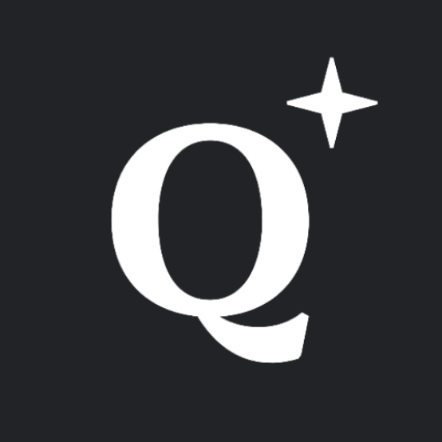Qwant
Qwant est un moteur de recherche européen qui respecte la vie privée des utilisateurs en ne collectant pas leurs données personnelles. Il offre des résultats pertinents, une interface claire, et inclut des fonctionnalités pour rechercher des actualités, des images et des vidéos, tout en promouvant la confidentialité en ligne.
Yandex
Yandex est un moteur de recherche russe qui propose des résultats de recherche pertinents, des services de cartographie, de traduction, et de stockage en ligne. Il offre une interface utilisateur fluide et une forte intégration avec divers services numériques, tout en étant particulièrement populaire en Russie et dans d'autres pays de l'Est.
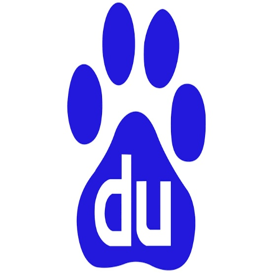Baidu
Baidu est le principal moteur de recherche en Chine, offrant des résultats pertinents, des services de cartographie, de traduction, et des recherches multimédias. Il intègre également des fonctionnalités pour les actualités et les applications, optimisées pour le public chinois.
 Brave Search
Brave Search
Brave Search est un moteur de recherche axé sur la confidentialité, qui ne suit ni ne collecte les données des utilisateurs. Il propose des résultats indépendants et neutres, sans publicités ciblées, avec une interface épurée et rapide.
Startpage
Startpage est un moteur de recherche axé sur la confidentialité, qui utilise les résultats de Google sans suivre ni stocker les données des utilisateurs. Il offre une navigation anonyme et une interface simple pour des recherches sécurisées et privées.
Yep
Yep est un moteur de recherche développé par Ahrefs, qui met l'accent sur la confidentialité en ne collectant pas de données personnelles. Il partage 90 % des revenus publicitaires avec les créateurs de contenu, offrant une expérience de recherche transparente et orientée vers l'éthique.
Kagi
Kagi est un moteur de recherche payant axé sur la qualité et la confidentialité, sans publicités ni suivi des utilisateurs. Il offre des résultats précis et personnalisables, avec une interface épurée pour une expérience de recherche sans distractions.
Les meilleurs navigateurs de recherche en
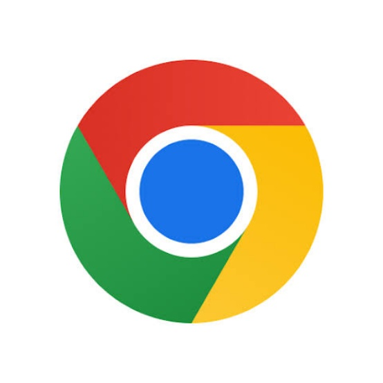Chrome
Chrome est un navigateur web rapide et sécurisé développé par Google, offrant une navigation fluide, des extensions variées, et une synchronisation facile entre appareils. Son interface intuitive et ses performances optimisées en font un choix populaire pour une expérience web rapide et personnalisée.
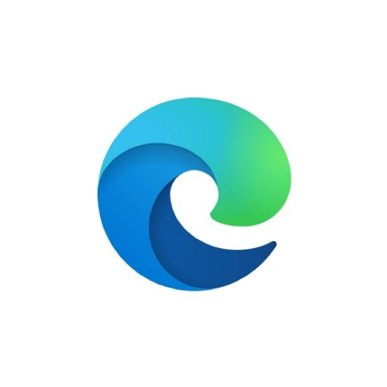Edge
Edge est un navigateur développé par Microsoft, offrant une navigation rapide, des outils de productivité intégrés, et une bonne compatibilité avec les services Windows. Son design épuré, ses fonctionnalités de confidentialité, et ses options de personnalisation en font un choix polyvalent pour les utilisateurs.
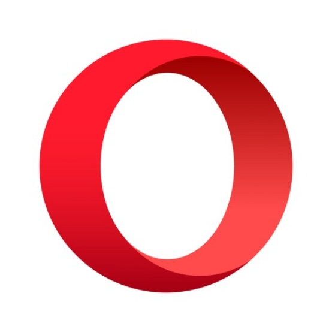Opera
Opera est un navigateur rapide et sécurisé avec un bloqueur de publicités intégré, un VPN gratuit et des espaces de travail personnalisables. Il propose une interface élégante, une consommation de mémoire optimisée, et des fonctionnalités pratiques comme l’intégration des messageries et un mode économie de données.
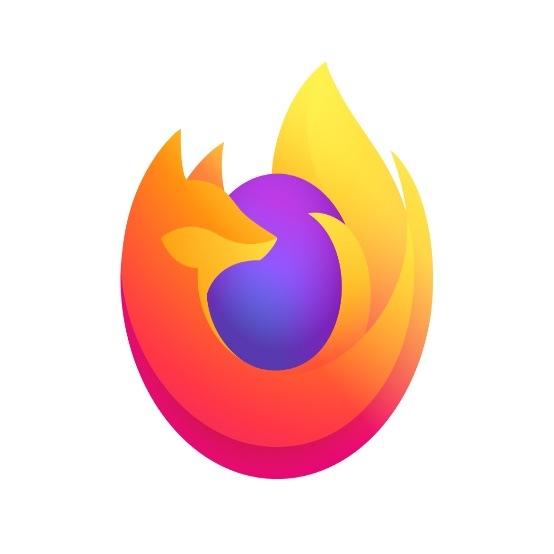Firefox
Firefox est un navigateur open-source axé sur la confidentialité et la sécurité, offrant une navigation rapide, un bloqueur de suivi intégré, et une forte personnalisation. Son interface intuitive et ses extensions variées en font un choix apprécié pour une navigation respectueuse de la vie privée.
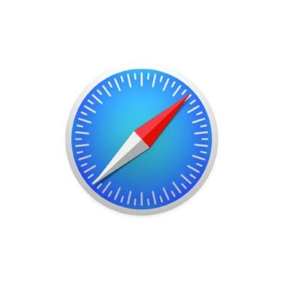Safari
Safari est le navigateur d'Apple, optimisé pour les appareils iOS et macOS, offrant une navigation rapide, économe en énergie, et des fonctionnalités de confidentialité avancées. Son design épuré et son intégration fluide avec l'écosystème Apple en font un choix privilégié pour les utilisateurs Apple.
Brave
Brave est un navigateur axé sur la confidentialité, bloquant par défaut les publicités et les traqueurs. Il offre une navigation rapide, une consommation de données réduite, et propose des récompenses en cryptomonnaie pour les utilisateurs qui choisissent de voir des publicités non-intrusives.
Vivaldi
Vivaldi est un navigateur personnalisable qui permet de modifier l’interface, d'organiser les onglets en groupes, et d'utiliser des commandes rapides. Il offre une navigation privée, des options de personnalisation étendues, et des outils intégrés comme la prise de notes et la capture d’écran.
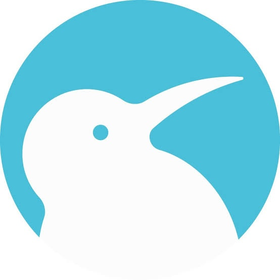Kiwi
Kiwi est un navigateur basé sur Chromium, offrant une expérience rapide et fluide avec des fonctionnalités supplémentaires comme le support des extensions Chrome sur Android. Il inclut un bloqueur de publicité intégré, une interface épurée, et une meilleure gestion de la confidentialité.
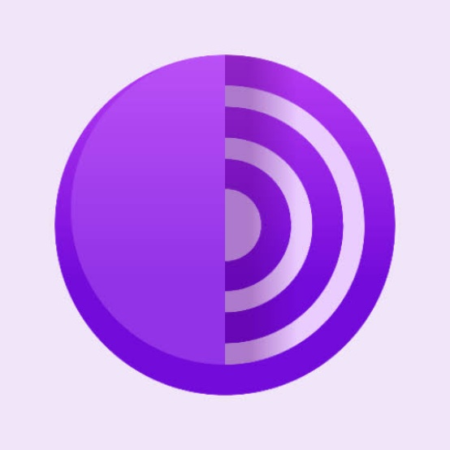Tor
Tor est un navigateur axé sur la confidentialité, permettant de naviguer de manière anonyme en utilisant un réseau décentralisé pour masquer l'adresse IP. Il bloque les traqueurs et protège contre la surveillance en ligne, offrant une sécurité renforcée pour les utilisateurs soucieux de leur vie privée.
 1DM
1DM
1DM est un gestionnaire de téléchargement et navigateur pour Android, offrant des téléchargements rapides, un support pour les torrents, et la possibilité de télécharger des vidéos en streaming. Il intègre un navigateur web rapide avec un bloqueur de publicités et permet de gérer plusieurs téléchargements simultanés, tout en optimisant les vitesses de téléchargement.
DuckDuckGo
DuckDuckGo propose également un navigateur mobile qui met l'accent sur la confidentialité. Il bloque les traqueurs, offre une navigation anonyme, et permet de rechercher sans enregistrer l'historique. Ce navigateur simple et sécurisé garantit une expérience en ligne respectueuse de la vie privée.
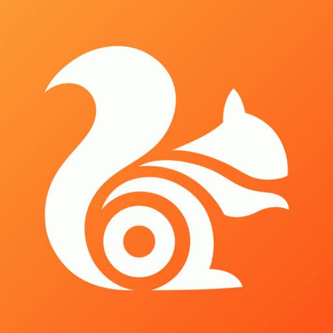UC Browser
UC Browser est un navigateur rapide pour mobile et PC, offrant des téléchargements rapides, un blocage des publicités, et une compression de données pour économiser la bande passante. Il propose une interface personnalisable et un mode de navigation privé pour une expérience fluide et sécurisée.
Dezor
Dezor est un navigateur axé sur la confidentialité et le streaming, offrant une navigation rapide et un accès facile aux contenus multimédias. Il intègre un bloqueur de publicités et une protection contre le suivi, permettant une expérience en ligne privée et fluide.
Les moteurs de recherche pour faire des recherches plus appronfondies en
 Searx
Searx
Searx est un moteur de recherche open-source et respectueux de la vie privée qui agrège les résultats de nombreuses sources sans suivre les utilisateurs ni stocker leurs données. Il permet de personnaliser les recherches en sélectionnant les moteurs à inclure (comme Google, Bing, etc.), et propose des résultats non filtrés, protégeant ainsi la confidentialité tout en offrant une recherche complète et diversifiée.
MetaSearx
MetaSearx est un métamoteur de recherche open source qui privilégie la confidentialité. Il regroupe les résultats de plusieurs moteurs de recherche sans suivre les utilisateurs ni stocker leurs données. Entièrement personnalisable, il permet de choisir les sources et de filtrer les résultats selon les préférences de l'utilisateur. Grâce à sa transparence, MetaSearx offre une recherche diversifiée et sécurisée, respectueuse de la vie privée.
 [Nom]
[Nom]
[Description]